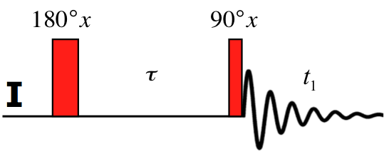
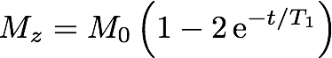

The Inversion-Recovery experiment can be used to measure T1 times.

The sequence starts with a 180°-pulse that inverts the populations to -Iz. During the
delay time τ that follows the spins are allowed to relax until a 90°-pulse creates
observable, transverse magnetisation and the FID is acquired. The magnitude and
sign of the peaks in the spectrum depend on the longitudinal relaxation rate
of each spin. If τ is systematically varied, the peak intensity as a function of τ
is proportional to the z-magnetisation just before the second pulse.

The T1 times can be calculated by fitting the curve.